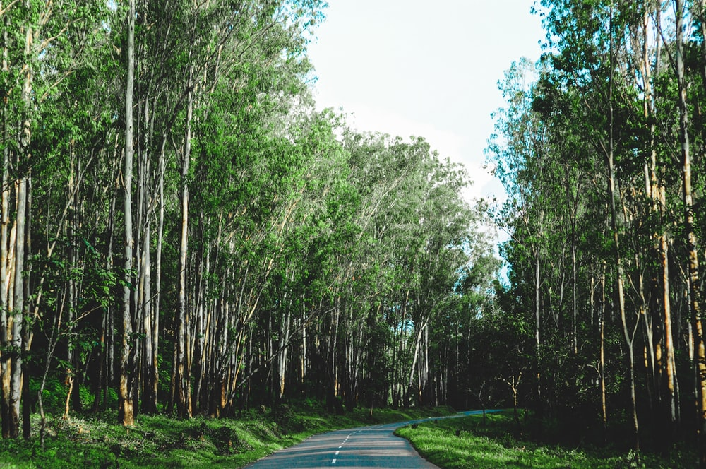

Replete with waterfalls, historical caves, comfortable resorts and homestays, Wayanad in Kerala is famous for its spice plantations and wildlife. Walking through the sprawling spice plantations, trekking to the pre-historic caves and experiencing a resort holiday are one of the many things you can do to get a taste of Wayanad.
Wayanad is best known for the wildlife reserves - Wayanad wildlife reserve which is home to an exquisite variety of flora and fauna. Wayanad wildlife reserve is an integral part of the Nilgiri biosphere reserve peacefully located amidst the serene hills of Western Ghats. Wayanad homes a wide variety of wildlife like elephants, leopards, and bears. Wayanad is a perfect weekend idea from the cities of South India. If taking a road trip from Bangalore, you will drive through three national parks: Nagarhole, Bandipur and Mudumalai.

The most popular tourist location of Wayanad district is the Kuruva Island. People from all over the country are attracted to the dense forest surrounding the island situated amidst the tributaries of River Kabani. Kuruva Island is only occupied by rare birds, flora and herbs that are a sight to sore eyes. This quaint retreat from the busy city life is a place of profound peacefulness and tranquillity. It is found 40kms west of Sulthan Bathery.
Situated in the Ambukuthy Mountain, the Edakkal Cave is a stunning structure. With a length and width of 96ft and 22ft respectively, the cave is a delight to tourists. The walls are adorned with intriguing carvings that will take your breath away, and archaeology enthusiasts will love the intricate designs and elements of this creation. The history of Wayanad, and even the entirety of Kerala is said to have been covered in these beautiful carvings, and they prove to be one of the best tourist spots of Wayanad
Located in the east of Sulthan Bathery, the Muthanga Wildlife Sanctuary is extremely close to the border of Karnataka. Wild forests house the most popular species of animals like the spotted deer, elephant, bison, wild bear, cheetah, tiger and the likes. Elephant rides are provided by the Forest Department to the tourists.